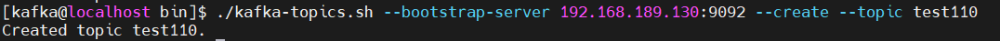
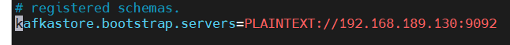
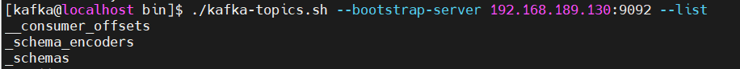
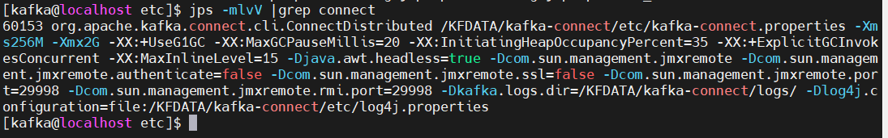

Debezium + Kafka 实时同步 MySQL 数据到 DolphinDB
1. Debezium 同步方案概述
Debezium 是一个开源的分布式平台，用于实时捕获和发布数据库更改事件。它可以将关系型数据库（如 MySQL、PostgreSQL、Oracle 等）的变更事件转化为可观察的流数据，以供其他应用程序实时消费和处理。本文中我们将采用 Debezium 与 Kafka 组合的方式来实现从 MySQL 到 DolphinDB 的数据同步。
Kafka + Debezium 的数据同步方案需要部署 4 个服务，如下所示
- ZooKeeper：kafka 的依赖部署
- Kafka：数据存储
- Kafka-Connect：用于接入数据插件 source-connetor、sink-connector 的框架，可以提供高可用。也可以部署单实例版本。
- Schema-Registry ：提供实时同步的数据的元数据注册功能，支持数据序列化。
基于 Debezium 的数据架构图如下：

接下来，本文将逐一介绍这些服务的下载、安装，以及配置数据同步任务。
1.1. 部署 Kafka 单实例实时数据存储
基于 Kafka 的整套架构是支持高可用集群的。不过，即使部署单实例的服务，也可以达成数据同步任务。
本文将以单实例存储来进行介绍数据同步。
1.1.1. 部署准备
首先下载程序包，Zookeeper（开源）、Kafka（开源）、Confluent（社区版），可以自行到官网下载最新稳定版本。
并将下面 4 个软件包放到 /opt 目录下。（软件、配置、数据路径文件较多。注意：初次试用请尽量保持路径一致。）
- jdk-17.0.7_linux-x64_bin.tar.gz
- apache-zookeeper-3.7.1-bin.tar.gz
- kafka_2.13-3.4.1.tgz（下载 scala 2.13 版本）
- confluent-community-7.4.0.tar.gz
Confluent 下载会稍微麻烦点，需要选择 self-managed 然后录入信息，点击 start free 才能下载。注意下载 community 版本即可满足需要，我们只需要里头的 schema-registry 包。当然如果需要更好功能，也可以下载正式版，正式版包括了 Zookeeper、Kafka 以及管理、监控 Kafka 的更多功能。Confluent 是 Kafka 相关的商业公司。

以上 4 个程序包下载好之后，我们就可以开始部署了。
1.1.2. 部署 Zookeeper
1.1.2.1. 基础准备
第一步：创建部署用户
创建用户 kafka，授予 sudo 免密权限（需自行设置）。然后切换到 kafka 用户来进行操作（以下均为 kafka 用户操作）。
useradd kafka
su kafka第二步：安装部署 java 环境
安装 java 到路径 /opt/java17，整套架构涉及的程序都是基于 java 虚拟机运行的。所以必须安装 java。
cd /opt
sudo mkdir -p /usr/local/java
sudo tar -xvf jdk-17.0.7_linux-x64_bin.tar.gz
sudo mv jdk-17.0.7 /usr/local/java/java17设置 java 环境变量（kafka 用户下执行）。
vim ~/.bashrc
# 输入下面代码
JAVA_HOME=/usr/local/java/java17
PATH=$JAVA_HOME/bin:$PATH
export JAVA_HOME PATH
source ~/.bashrc
java --version
1.1.2.2. 安装 Zookeeper
第一步：解压并安装 Zookeeper
3.7.1 版本的 Zookeeper 用户、组有默认值，这里我们需要调整一下。
cd /opt
sudo tar -xvf apache-zookeeper-3.7.1-bin.tar.gz
sudo mv apache-zookeeper-3.7.1-bin zookeeper
sudo chown -R root:root zookeeper
sudo chmod -R 755 zookeeper第二步：准备 Zookeeper 的配置文件和存储文件
创建 zookeeper 的配置文件、数据文件、日志文件的存储路径。请尽量保持路径一致。篇末有打包的全部程序配置文件包。
sudo mkdir -p /KFDATA/zookeeper/etc
sudo mkdir -p /KFDATA/zookeeper/data
sudo mkdir -p /KFDATA/zookeeper/datalog
sudo mkdir -p /KFDATA/zookeeper/logs
sudo chown -R kafka:kafka /KFDATA
chmod -R 700 /KFDATA/zookeeper准备 zookeeper 的配置文件 zoo.cfg。先从 zookeeper 安装路径下复制 log4j.properties 过来，然后进行修改。
说明：zookeeper 的不同版本 log4j.properties 配置内容会略有区别。如有不同，请按 log4j 的规则调整。
cd /KFDATA/zookeeper/etc
touch zoo.cfg
echo tickTime=2000 > zoo.cfg
echo initLimit=10 >>zoo.cfg
echo syncLimit=5 >>zoo.cfg
echo dataDir=/KFDATA/zookeeper/data >>zoo.cfg
echo dataLogDir=/KFDATA/zookeeper/datalog >>zoo.cfg
echo clientPort=2181 >>zoo.cfg
sudo cp /opt/zookeeper/conf/log4j.properties ./
sudo chown kafka:kafka ./log4j.properties修改 log4j.properties 中的 zookeeper.log.dir 参数
第三步：创建 Zookeeper 的启动文件
创建一个 zk.env ，配置 Zookeeper 启动所需环境变量，用于启动 service 文件调用。
cd /KFDATA/zookeeper/etc/
touch zk.env
echo JAVA_HOME=/usr/local/java/java17 > zk.env
echo PATH="/usr/local/java/java17/bin:/opt/zookeeper/bin:/usr/local/bin:/bin:/usr/bin:/usr/local/sbin:/usr/sbin" >> zk.env
echo ZOO_LOG_DIR=/KFDATA/zookeeper/logs >> zk.env
echo ZOO_LOG4J_OPTS=\"-Dlog4j.configuration=file:/KFDATA/zookeeper/etc/log4j.properties\" >> zk.env如果对 Zookeeper 很熟练可以自行调用 Zookeeper 安装目录下的 bin 文件夹下的操作脚本来进行操作或测试。
使用 vim 命令编辑一个 service 文件。
sudo vim /usr/lib/systemd/system/zookeeper.service录入以下启动命令信息，并保存。
[Unit]
Description=Apache Kafka - ZooKeeper
After=network.target
[Service]
Type=forking
User=kafka
Group=kafka
EnvironmentFile=/KFDATA/zookeeper/etc/zk.env
ExecStart=/opt/zookeeper/bin/zkServer.sh start /KFDATA/zookeeper/etc/zoo.cfg
ExecStop=/opt/zookeeper/bin/zkServer.sh stop /KFDATA/zookeeper/etc/zoo.cfg
TimeoutStopSec=180
Restart=no
[Install]
WantedBy=multi-user.target
重新加载 service 启动服务。
sudo systemctl daemon-reload第四步：创建测试脚本
（1）创建连接 Zookeeper 测试文件 zkCon.sh。
mkdir -p /KFDATA/bin
cd /KFDATA/bin
touch zkCon.sh
echo export JAVA_HOME=/usr/local/java/java17 >zkCon.sh
echo export PATH="{$JAVE_HOME}/bin:/opt/zookeeper/bin:/usr/local/bin:/bin:/usr/bin:/usr/local/sbin:/usr/sbin" >>zkCon.sh
echo export ZOO_LOG_DIR=/KFDATA/zookeeper/logs >>zkCon.sh
echo export ZOO_LOG4J_OPTS=\"-Dlog4j.configuration=file:/KFDATA/zookeeper/etc/log4j.properties\" >>zkCon.sh
echo '/opt/zookeeper/bin/zkCli.sh -server localhost:2181 -Dzookeeper.config.path=/KFDATA/zookeeper/zoo.cfg' >>zkCon.sh对脚本授予执行权限。
chmod +x zkCon.sh 1.1.2.3. 部署启动 Zookeeper
第一步：通过 systemctl 工具启动 Zookeeper 服务。
sudo systemctl start zookeeper.service第二步：查看 Zookeeper 启动情况
可以通过 jps 命令 查看 java 进程，QuorumPeerMain 进程是 Zookeeper 的启动进程。

也可以通过 systemctl 命令查看，如图即是正常启动。
sudo systemctl status zookeeper第三步：通过客户端连接 Zookeeper，并进行查看。
cd /KFDATA/bin/
./zkCon.sh
# 等待 zookeeper 命令行窗口
ls /
ls /zookeeper 如果返回如下显示，表示 Zookeeper 启动成功，可以在 Zookeeper 中观察到自身的基础信息。
ctrl +c 可以退出 Zookeeper 客户端连接。
1.1.3. 部署 Kafka
1.1.3.1. 安装 Kafka
第一步：解压安装 Kafka 文件
执行以下命令，修改一下 Kafka 的安装文件名。
cd /opt
sudo tar -xvf kafka_2.13-3.4.1.tgz
sudo mv kafka_2.13-3.4.1 kafka第二步：准备 Kafka 的配置文件和存储文件
创建 Kafka 的配置文件、数据文件、日志文件的存储路径。
mkdir -p /KFDATA/kafka/etc
mkdir -p /KFDATA/kafka/data
mkdir -p /KFDATA/kafka/logs准备 Kafka 相关配置文件，创建启动配置文件，和日志配置文件。
cd /KFDATA/kafka/etc
touch kafka-server.properties
cp /opt/kafka/config/log4j.properties ./
cp /opt/kafka/config/tools-log4j.properties ./修改 kafka-server.properties 文件中的配置，修改内容较多，文件如下，也可以自行录入。
############################# Server Basics #############################
broker.id=1
############################# Socket Server Settings #############################
listeners=PLAINTEXT://0.0.0.0:9092
advertised.listeners=PLAINTEXT://192.168.189.130:9092
num.network.threads=3
num.io.threads=8
socket.send.buffer.bytes=102400
socket.receive.buffer.bytes=102400
socket.request.max.bytes=104857600
############################# Log Basics #############################
log.dirs=/KFDATA/kafka/data
num.partitions=1
num.recovery.threads.per.data.dir=1
############################# Internal Topic Settings #############################
offsets.topic.replication.factor=1
transaction.state.log.replication.factor=1
transaction.state.log.min.isr=1
############################# Log Retention Policy #############################
log.retention.hours=-1
log.retention.bytes=21474836480
log.segment.bytes=1073741824
log.retention.check.interval.ms=300000
auto.create.topics.enable=true
############################# Zookeeper #############################
zookeeper.connect=192.168.189.130:2181
# Timeout in ms for connecting to zookeeper
zookeeper.connection.timeout.ms=12000
############################# Group Coordinator Settings #############################
group.initial.rebalance.delay.ms=0
############################# message Settings #############################
message.max.byte=5242880其中以下两项需要视具体环境修改，advertise.listeners 是对外监听端口。
advertised.listeners=PLAINTEXT://192.168.189.130:9092
zookeeper.connect=192.168.189.130:2181第三步：准备 Kafka 的启动文件
创建 Kafka 启动的环境变量文件，这里配置了开启 JMX 监控端口，如果不需要，可以忽略后两项配置。
JMX 端口的作用是可以通过此端口连接，获取一些监控指标。
cd /KFDATA/kafka/etc
touch kf-server.env
echo PATH="/usr/local/java/java17/bin:/opt/zookeeper/bin:/opt/kafka:/usr/local/bin:/bin:/usr/bin:/usr/local/sbin:/usr/sbin" >>kf-server.env
echo LOG_DIR="/KFDATA/kafka/logs/" >>kf-server.env
echo KAFKA_LOG4J_OPTS=\"-Dlog4j.configuration=file:/KFDATA/kafka/etc/log4j.properties\" >>kf-server.env
echo KAFKA_JMX_OPTS=\"-Dcom.sun.management.jmxremote=true -Dcom.sun.management.jmxremote.authenticate=false -Dcom.sun.management.jmxremote.ssl=false -Djava.rmi.server.hostname=192.168.189.130 -Djava.net.preferIPv4Stack=true\" >>kf-server.env
echo JMX_PORT=29999 >>kf-server.env创建 Kafka 的 systemd service 文件，vim 打开一个文件。
sudo vim /usr/lib/systemd/system/kafka-server.service录入以下内容，并保存。
[Unit]
Description=Apache Kafka - broker
After=network.target confluent-zookeeper.target
[Service]
Type=forking
User=kafka
Group=kafka
EnvironmentFile=/KFDATA/kafka/etc/kf-server.env
ExecStart=/opt/kafka/bin/kafka-server-start.sh -daemon /KFDATA/kafka/etc/kafka-server.properties
ExecStop=/KFDATA/kafka/bin/kafka-server-stop.sh
LimitNOFILE=1000000
TimeoutStopSec=180
Restart=no
[Install]
WantedBy=multi-user.target重新加载 service 启动服务。
sudo systemctl daemon-reload1.1.3.2. 部署启动 Kafka
第一步：通过 systemctl 工具启动 Kafka 服务
执行下述命令启动 Kafka 服务：
sudo systemctl start kafka-server.service第二步：查看 Kafka 启动情况
检查 Kafka 启动情况，可以连接 Zookeeper 客户端。查看 zookeeper 中的数据。
cd /KFDATA/bin
./zkCon.sh
ls /可以看到 Zookeeper 中已经多了一些 kafka 注册信息，如 brokers、cluseter、config、controller 等。

此时，可以测试创建一个 topic 进行测试：
cd /opt/kafka/bin
./kafka-topics.sh --bootstrap-server 192.168.189.130:9092 --create --topic test110
执行下述代码，查看当前 Kafka 中 topic 列表：
./kafka-topics.sh --bootstrap-server 192.168.189.130:9092 --list
如果返回上述图片显示内容，说明 Kafka 已经启动成功。
1.1.4. 部署 Schema-Registry
Schema-Registry 是用于注册传输数据的数据结构的。并记录数据结构改变的每一个版本。数据写入 Kafka 和从 Kafka 中读出都需要 schema-registry 中记录的数据结构来进行序列化和反序列化。通过使用 schema-registry 来注册数据结构。Kafka 中只需保存序列化后的数据即可。可以减少数据的空间占用。
1.1.4.1. 安装 Schema-Registry
第一步：解压安装 Schema-Registry 文件
Schema-Registry 程序是 confluent 程序包中一部分。所以这里我们要安装 conluent，社区版本即可。解压缩 confluent-community-7.4.0.tar.gz，并修改文件名，设置隶属组。
cd /opt
sudo tar -xvf confluent-community-7.4.0.tar.gz
sudo mv confluent-7.4.0 confluent
sudo chown -R root:root confluent
sudo chmod -R 755 confluent第二步：准备 Schema-Registry 的配置文件和存储文件
创建 schema-registry 的配置、日志文件存储路径。
mkdir -p /KFDATA/schema-registry/etc
mkdir -p /KFDATA/schema-registry/logs准备 schema-registry 的配置文件。
cd /KFDATA/schema-registry/etc
cp /opt/confluent/etc/schema-registry/schema-registry.properties ./
cp /opt/confluent/etc/schema-registry/log4j.properties ./修改 schema-registry.properties 文件，修改连接的 Kafka Server 地址。

第三步：准备 Schema-Registry 的启动文件
创建 Schema-Registry 启动环境变量文件，用于 Schema-Registry 启动时使用。
touch schema-registry.env
echo PATH="/usr/local/java/java17/bin:/opt/confluent/bin:/usr/local/bin:/bin:/usr/bin:/usr/local/sbin:/usr/sbin" >schema-registry.env
echo LOG_DIR="/KFDATA/schema-registry/logs" >>schema-registry.env
echo LOG4J_DIR="/KFDATA/schema-registry/etc/log4j.properties" >>schema-registry.env
echo SCHEMA_REGISTRY_LOG4J_OPTS=\"-Dlog4j.configuration=file:/KFDATA/schema-registry/etc/log4j.properties\" >>schema-registry.env创建 Schema-Registry 的 systemd service 启动文件。
sudo vim /usr/lib/systemd/system/schema-registry.service录入以下内容并保存。
[Unit]
Description=RESTful Avro schema registry for Apache Kafka
After=network.target
[Service]
Type=forking
User=kafka
Group=kafka
EnvironmentFile=/KFDATA/schema-registry/etc/schema-registry.env
ExecStart=/opt/confluent/bin/schema-registry-start -daemon /KFDATA/schema-registry/etc/schema-registry.properties
TimeoutStopSec=180
Restart=no
[Install]
WantedBy=multi-user.target重新加载 service 启动服务。
sudo systemctl daemon-reload1.1.4.2. 部署启动 Schema-Registry
第一步：通过 systemctl 工具启动 Schema-Registry 服务
执行以下命令
sudo systemctl start schema-registry第二步：查看 Schema-Registry 启动情况
通过 systemctl 工具查看启动状态。
sudo systemctl status schema-registry
查看 Kafka 中的 topic
cd /opt/kafka/bin
./kafka-topics.sh --bootstrap-server 192.168.189.130:9092 --list可以看到 kafka 中已经创建出了 schema-registry 需要使用的 topic

schema-registry 启动成功。
1.1.5. 部署 Kafka-Connect
Kafka-Connect 是 Kafka 提供的 HA 框架，实现了 Kafka-Connect 接口的 connector（连接器），只需处理自己需要进行读取、写入数据任务。高可用部分由 kafka-connect 框架负责。
Kafka-Connect 可用通过 rest api 进行访问。
1.1.5.1. 安装 Kafka-Connect
第一步：Kafka-Connect 安装
Kafka-Connect 由 Kafka 提供，启动程序在 Kafka 的安装路径下，已经存在。数据元数据注册由 schema-registry 处理。相应的序列化包在已安装 Confluent 路径下。故无需再安装程序包。
第二步：准备 Kafka-Connect 的配置文件和存储文件
创建 Kafka-Connect 的配置、日志文件存储路径
mkdir -p /KFDATA/kafka-connect/etc
mkdir -p /KFDATA/kafka-connect/logs创建 Kafka-Connect 的配置文件
cd /KFDATA/kafka-connect/etc
vim kafka-connect.properties录入以下内容并保存。ip 地址部分，需要视当前环境修改。
bootstrap.servers=192.168.189.130:9092
group.id=connect-cluster
key.converter=io.confluent.connect.avro.AvroConverter
key.converter.schema.registry.url=http://192.168.189.130:8081
value.converter=io.confluent.connect.avro.AvroConverter
value.converter.schema.registry.url=http://192.168.189.130:8081
key.converter.schemas.enable=true
value.converter.schemas.enable=true
internal.key.converter=org.apache.kafka.connect.json.JsonConverter
internal.value.converter=org.apache.kafka.connect.json.JsonConverter
internal.key.converter.schemas.enable=false
internal.value.converter.schemas.enable=false
config.storage.topic=connect-configs
offset.storage.topic=connect-offsets
status.storage.topic=connect-statuses
config.storage.replication.factor=1
offset.storage.replication.factor=1
status.storage.replication.factor=1
plugin.path=/opt/confluent/share/java/plugin
rest.host.name=192.168.189.130
rest.port=8083
rest.advertised.host.name=192.168.189.130
rest.advertised.port=8083
offset.flush.timeout.ms=50000
offset.flush.interval.ms=10000
send.buffer.bytes=13107200
consumer.max.poll.records=10000
consumer.partition.assignment.strategy=org.apache.kafka.clients.consumer.CooperativeStickyAssignor创建 Kafka-Connect 的 log4j 配置文件。
cd /KFDATA/kafka-connect/etc
cp /opt/kafka/config/connect-log4j.properties ./log4j.properties修改文件中的以下参数配置
vim ./log4j.properties
log4j.appender.connectAppender.File=${kafka.logs.dir}/connect.log将其修改为
log4j.appender.connectAppender.File=/KFDATA/kafka-connect/logs/connect.log第三步：准备 Kafka-Connect 的启动文件
创建 Kafka-Connect 启动环境变量文件。
cd /KFDATA/kafka-connect/etc
touch kafka-connect.env
echo PATH="/usr/local/java/java17/bin:/usr/local/bin:/bin:/usr/bin:/usr/local/sbin:/usr/sbin" >kafka-connect.env
echo LOG_DIR="/KFDATA/kafka-connect/logs/" >>kafka-connect.env
echo LOG4J_DIR="/KFDATA/kafka-connect/etc/log4j.properties" >>kafka-connect.env
echo KAFKA_LOG4J_OPTS=\"-Dlog4j.configuration=file:/KFDATA/kafka-connect/etc/log4j.properties\" >>kafka-connect.env
echo CLASSPATH=/opt/confluent/share/java/schema-registry/*:/opt/confluent/share/java/kafka-serde-tools/*:/opt/confluent/share/java/confluent-common/* >>kafka-connect.env
echo JMX_PORT=29998 >>kafka-connect.env创建 Kafka-Connect 的 systemd service 文件
sudo vim /usr/lib/systemd/system/kafka-connect.service录入以下内容，并保存。
[Unit]
Description=Apache Kafka Connect - distributed
After=network.target
[Service]
Type=simple
User=kafka
Group=kafka
EnvironmentFile=/KFDATA/kafka-connect/etc/kafka-connect.env
ExecStart=/opt/kafka/bin/connect-distributed.sh /KFDATA/kafka-connect/etc/kafka-connect.properties
TimeoutStopSec=180
Restart=no
[Install]
WantedBy=multi-user.target重新加载 service 启动服务。
sudo systemctl daemon-reload1.1.5.2. 部署启动 Kafka-Connect
第一步：通过 systemctl 工具启动 Kafka-Connect 服务
执行以下命令
sudo systemctl start kafka-connect.service第二步：查看 Kafka-Connect 启动情况
通过 jps 命令查看启动情况
jps -mlvV |grep connect
查看 Kafka 中的 topic 情况，Kafka-Connect 会在 Kafka 中创建 connect-configs、connect-offsets、connect-statuses 三个 topic。
cd /opt/kafka/bin
./kafka-topics.sh --bootstrap-server 192.168.189.130:9092 --list
使用 curl 命令访问 kafka-connect，可以看到当前我们还没有配置 connector 任务
curl -H "Accept:application/json" 192.168.189.130:8083/connectors/1.2. 部署 MySQL 数据同步到 Kafka
MySQL 的数据同步包括初始全量同步和 CDC 实时增量同步。
全量同步：将所选表的全部数据以 Insert 的方式写入 kafka，建议此时不要对数据库进行操作。
CDC 实时增量同步：从全量同步时记录的事务顺序号，实时读取 MySQL 的 binlog 日志，写入增量数据到 Kafka。
1.2.1. 安装 Debezium-MySQL 连接器插件
配置启动 Debezium-MySQL 连接器，需要以下两步：
下载、安装 Debezium-MySQL 插件，并将插件路径配置到 Kafka Connect 配置文件中。
重新启动 Kafka Connect 程序，以加载插件。
第一步：下载安装 Debezium-MySQL 插件
官方网站 Debezium ，选择最新稳定版本进行下载。
选择 MySQL Connector Plug-in
创建插件路径（部署 kafka，kafka-connnect 环境的 kafka 用户），在此路径下解压 Debezium 的 MySQL 插件包
sudo mkdir -p /opt/confluent/share/java/plugin
cd /opt/confluent/share/java/plugin
sudo tar -xvf debezium-connector-mysql-2.3.2.Final-plugin.tar.gz
rm ./debezium-connector-mysql-2.3.2.Final-plugin.tar.gz第二步：配置 Kafka-Connect 加载插件
修改 Kafka Connect 的配置文件，添加插件路径配置
cd /KFDATA/kafka-connect/etc
vim kafka-connect.properties添加或修改参数 plugin.path 如下
plugin.path=/opt/confluent/share/java/plugin重新启动 Kafka Connect
sudo systemctl stop kafka-connect
sudo systemctl start kafka-connect查看日志输出，如下图所示，则插件加载成功。
cat /KFDATA/kafka-connect/logs/connect.log|grep mysql1.2.2. 配置 MySQL 数据库
做为 Source 数据库，我们基于 MySQL 的 binlog 来获取实时的增量数据，所以需要对 MySQL 数据库做一些设置。
第一步：创建数据同步用的 MySQL 用户
Debezium MySQL 连接器需要 MySQL 用户帐户。此 MySQL 用户必须对 Debezium MySQL 连接器捕获更改的所有数据库拥有适当的权限。
CREATE USER 'datasyn'@'%' IDENTIFIED BY '1234';授予权限。
GRANT SELECT, RELOAD, SHOW DATABASES, REPLICATION SLAVE, REPLICATION CLIENT ON *.* TO 'datasyn';刷新授权表。
FLUSH PRIVILEGES;第二步：设置 MySQL 参数
进行 CDC 同步，需要对 MySQL 数据库进行一些设置。
| 参数 | 值 | 说明 | |
|---|---|---|---|
| server-id | 1 | MySQL 集群中用于标识一个 MySQL 服务器实例。可以自行调整设置。 | |
| log-bin | mysql-bin | 设置启用二进制日志功能，并指定日志文件名及存储位置。可自行调整设置。 | |
| binlog_format | ROW | 必须 binlog-format设置为 ROW 或 row。连接 MySQL 级联复制实例时，链路内每个实例环节都要设置。 | |
| binlog_row_image | FULL | 必须 binlog_row_image设置为 FULL 或 full。连接 MySQL 级联复制实例时，链路内每个级联实例环节都要设置。 | |
| gtid_mode | ON | 设置开启全局事务标识 | |
| enforce_gtid_consistency | ON | 设置强制执行 GTID 一致性 | |
| expire_logs_days | 3 | 设置 MySQL 日志保留时间，MySQL 的 CDC 数据同步需要有对应日志文件才能进行同步。推荐至少设置保留 3 天。 | |
| binlog_row_value_options | ““ | 此变量不能设置为 PARTIAL_JSON | |
参数参考代码：
[mysqld]
server-id = 1
log_bin=mysql-bin
binlog_format=ROW
binlog_row_image=FULL
binlog_row_value_options=""
gtid_mode=ON
enforce_gtid_consistency=ON
expire_logs_days=31.2.3. 配置 MySQL 数据同步连接任务
配置同步任务的及检查的很多命令都要带上 url 等参数。为了操作快捷，封装了一些加载配置文件的操作脚本，kafka-tools.tar。下载当前包，解压缩到 /KFDATA 目录下。后续的很多操作，检查 Kafka 的 topic，查看数据。配置同步任务等都会使用 kafka-tools 包中的脚本。请务必配置。包中的脚本都可以无参数运行，会输出 help。
cd /KFDATA
sudo tar -xvf kafka-tools.tar
sudo chown kafka:kafka kafka-tools
rm ./kafka-tools.tar修改 kafka-tools/config/config.properties 配置参数。
按照本机的路径、IP 等对应修改 Kafka、Kafka_Connect 的启动 IP 地址，以及安装目录。
1.2.3.1. 准备 MySQL 数据库表
第一步：创建一个数据库
create database basicinfo;第二步：创建两张表，并插入一些数据
创建表 1 index_components，主键字段 4 个。
use basicinfo;
CREATE TABLE `index_components` (
`trade_date` timestamp NOT NULL DEFAULT CURRENT_TIMESTAMP,
`code` varchar(20) NOT NULL,
`effDate` timestamp NOT NULL DEFAULT CURRENT_TIMESTAMP,
`indexShortName` varchar(20) CHARACTER SET utf8mb3 COLLATE utf8mb3_general_ci DEFAULT NULL,
`indexCode` varchar(20) NOT NULL,
`secShortName` varchar(20) CHARACTER SET utf8mb3 COLLATE utf8mb3_general_ci DEFAULT NULL,
`exchangeCD` varchar(4) CHARACTER SET utf8mb3 COLLATE utf8mb3_general_ci DEFAULT NULL,
`weight` decimal(26,6) DEFAULT NULL,
`timestamp` timestamp NOT NULL DEFAULT CURRENT_TIMESTAMP ON UPDATE CURRENT_TIMESTAMP,
`flag` int NOT NULL DEFAULT '1',
PRIMARY KEY `index_components_pkey` (`trade_date`,`code`,`indexCode`,`flag`)
)ENGINE=InnoDB DEFAULT CHARSET=utf8mb4; 插入 4 条 数据
insert into index_components (trade_date,code,effdate,indexShortName,indexCode,secShortName,exchangeCD,weight,timestamp,flag)
values('2006-11-30','000759','2018-06-30 03:48:05','中证500','000905','中百集团','XSHE',0.0044,'2018-06-30 05:43:05',1),
('2006-11-30','000759','2018-06-30 04:47:05','中证500','000906','中百集团','XSHE',0.0011,'2018-06-30 05:48:06',1),
('2006-11-30','600031','2018-06-30 05:48:05','上证180','000010','三一重工','XSHG',0.0043,'2018-06-30 05:48:05',1),
('2006-11-30','600031','2018-06-30 06:48:02','沪深300','000300','三一重工','XSHG',0.0029,'2018-06-30 05:48:05',1);创建表 2 stock_basic ，主键字段 2 个。
CREATE TABLE `stock_basic` (
`id` bigint NOT NULL ,
`ts_code` varchar(20) NOT NULL,
`symbol` varchar(20) DEFAULT NULL,
`name` varchar(20) DEFAULT NULL,
`area` varchar(20) DEFAULT NULL,
`industry` varchar(40) DEFAULT NULL,
`list_date` date DEFAULT NULL,
PRIMARY KEY (`id`,`ts_code`)
) ENGINE=InnoDB DEFAULT CHARSET=utf8mb4;插入 3 条数据；
insert into stock_basic(id,ts_code,symbol,name,area,industry,list_date)
values (1,'000001.SZ','000001','平安银行','深圳','银行','1991-04-03'),
(2,'000002.SZ','000002','万科A','深圳','地产','1991-01-29'),
(3,'000004.SZ','000004','ST国华','深圳','软件服务','1991-01-14')1.2.3.2. 准备连接器配置文件，并启动连接任务
第一步：准备 MySQL 同步任务配置文件
创建连接 MySQL 的 source 连接器配置文件。
mkdir /KFDATA/datasyn-config
cd /KFDATA/datasyn-config
vim source-mysql.json录入以下配置，hostname 和 kafka 启动地址需对应修改。
{
"name": "basicinfo-connector",
"config":{
"connector.class": "io.debezium.connector.mysql.MySqlConnector",
"tasks.max": "1",
"topic.prefix":"mysqlserver",
"database.hostname": "192.168.189.130",
"database.port": "3306",
"database.user": "datasyn",
"database.password": "1234",
"database.server.id": "2223314",
"database.include.list": "basicinfo",
"schema.history.internal.kafka.bootstrap.servers": "192.168.189.130:9092",
"schema.history.internal.kafka.topic": "schema-changes.basicinfo",
"heartbeat.interval.ms":"20000"
}
}参数说明：以上参数为必填参数。更多详细参数说明可以参看 Debezium connector for MySQL :: Debezium Documentation
| 参数名称 | 默认值 | 参数说明 |
|---|---|---|
| connector.class | 无 | 连接器的 Java 类的名称。这里是 mysql 的连接器类名。 |
| tasks.max | 1 | 当前 connector 的最大并行任务数。mysql 的 source 连接器任务数只能是 1。 |
| topic.prefix | 无 | 当前 connector 同步写入任务的命名空间。会被用于添加到同步表对应 topic 名称前等 |
| database.hostname | 无 | MySQL 数据库服务器的 IP 地址或主机名。 |
| database.port | 3306 | MySQL 数据库服务器的整数端口号。 |
| database.user | 无 | MySQL 数据库服务器连接用户。 |
| database.password | 无 | MySQL 数据库服务器连接用户密码。 |
| database.server.id | 无 | 用来模拟 MySQL 隶属进程的进程号。同步程序会以此数字 ID 加入 MySQL 集群。 |
| database.influde.list | 无 | 匹配的数据库名。可以多个，用逗号分割即可。 |
| schema.history.internal.kafka.bootstrap.servers | 无 | 数据同步记录 MySQL 的表结构信息的 kafka 连接 |
| schema.history.internal.kafka.topic | 无 | 数据同步记录 MySQL 表结构的 topic 名称 |
| heartbeat.interval.ms | 0 | 当接到 MySQL 更改事件时，保证触发记录 binlog 事务位置或者 gtid 的间隔事件。（如果此值为 0 时，接收到不属于数据同步表的改变事件时，不会记录事务位置，可能导致当前记录的同步事务号大幅度落后 MySQL 的最新事务号）。 |
第二步：启动 MySQL 的数据同步任务
通过 rest api 启动 MySQL 的 source 连接器
curl -i -X POST -H "Accept:application/json" -H "Content-Type:application/json" http://192.168.189.130:8083/connectors/ -d @/KFDATA/datasyn-config/source-mysql.json也可以通过我们提供 kafka-tools 中的脚本启动，操作能简单一些
cd /KFDATA/kafka-tools/bin
./rest.sh create @/KFDATA/datasyn-config/source-mysql.json第三步：查看 MySQL 数据同步任务状态
查看同步任务列表。list 参数展示任务名列表，showall 参数会显示全部同步任务状态。
./rest.sh list
./rest.sh showall通过下图可以看到，connector 和 task 的状态都是 RUNNING，当前同步任务状态正常。
说明：每个同步任务会有一个 connector，可以多个 task。
使用 kafka-tools 的脚本 kafka.sh 查看 kafka 中的 topic
cd /KFDATA/kafka-tools/bin
./kafka.sh tplist|grep mysqlserver下图中的 topic [mysqlserver.basicinfo.index_components] 即为我们的表 basicinfo.index_components 数据在 kafka 中的存储
查看 topic [mysqlserver.basicinfo.index_components] 中的数据条数。
./kafka.sh get_offsets mysqlserver.basicinfo.index_componentskafka 中已经同步了 MySQL 表 basicinfo.index_components 的 4 条数据。
说明：在同步 MySQL 的初始快照数据时，不能中断。否则必须清理全部已同步数据，重新开始。即初始快照数据不支持断点续传。
1.3. 部署 Kafka 数据同步到 DolphinDB
1.3.1. 安装 Kafka-DolphinDB 连接器
配置启动 Kafka-DolphinDB 连接器插件，需要以下两步：
- 安装 Kafka-DolphinDB 插件，并将插件路径配置到 Kafka Connect 配置文件中。
- 重新启动 Kafka Connect 程序，以加载插件。
第一步：下载 Kafka-DolphinDB 插件
- jdbc-1.30.22.4-ddbsync.Beta1.jar：该 DolphinDB JDBC 包为数据同步做了一些专门修改，后续会同步到主分支上。
- kafka-connect-jdbc-10.7.4-ddb1.01.Beta1.jar：基于 kafka-connect-jdbc-10.7.4 开发，添加了 DolphinDB 连接器。
创建插件路径（部署 Kafka，Kafka-Connnect 环境的 kafka 用户），在此路径下放置 Kafka-DolphinDB 插件包，上面两个包都要放到此目录下。
sudo mkdir -p /opt/confluent/share/java/plugin/kafka-connect-jdbc第二步：配置 Kafka-Connect 加载插件
Kafka-DolphinDB 插件包的父路径与前文 Debezium-MySQL 连接器插件路径均为 /opt/confluent/share/java/plugin/，因此无需再次配置到 Kafka-Connect 的配置文件中。
如果路径不一致，可以在 kafka-connect.properties 中的 plugin.path 参数里配置，以逗号分隔。
查看 plugin.path 参数配置：
cat /KFDATA/kafka-connect/etc/kafka-connect.properties |grep plugin重新启动 Kafka Connect：
sudo systemctl stop kafka-connect
sudo systemctl start kafka-connect查看日志输出
cat /KFDATA/kafka-connect/logs/connect.log|grep JdbcSinkConnector出现下图中所示信息时，说明插件加载成功。
1.3.2. DolphinDB 的数据同步准备
第一步：创建同步的库、表
要求：当前支持数据同步，需要依赖 TSDB 引擎的 keepDuplicates = LAST 数据来保证数据写入的幂等性，即发生数据重复时，两次及以上的相同增量数据写入，不影响数据的一致性。所以需要满足以下条件：
- DolphinDB 的表必须是 TSDB 引擎且设置 keepDuplicates = LAST。
- TSDB 引擎目前不支持单字段 sortColumn 设置 keepDuplicates= LAST，所以同步的 MySQL 目标表主键必 须是 2 个及以上字段。。
- sortColumn 最后的字段必须是时间或者数字。对应的 MySQL 目标表主键字段必须包含时间或数字。
分别创建之前 MySQL 中两张表的对应表：
创建 MySQL 表 basicinfo.index_components的 DolphinDB 对应分布式表表 dfs://index_data.index_components
def createIndexComDB(dbName){ if(existsDatabase(dbName)){ dropDatabase(dbName) } database(directory=dbName, partitionType=RANGE, partitionScheme= 1999.01M + (0..26)*12,engine="TSDB") } def createIndexCom(dbName,tbName){ db=database(dbName) if(existsTable(dbName, tbName)){ db.dropTable(tbName) } mtable=table(100:0, `trade_date`code`effDate`indexShortName`indexCode`secShortName`exchangeCD`weight`timestamp`flag, [TIMESTAMP,SYMBOL,TIMESTAMP,SYMBOL,SYMBOL,SYMBOL,SYMBOL,DOUBLE,TIMESTAMP,INT]); db.createPartitionedTable(table=mtable, tableName=tbName, partitionColumns=`trade_date,sortColumns=`code`indexCode`flag`trade_date,compressMethods={trade_date:"delta"},keepDuplicates=LAST) } createIndexComDB("dfs://index_data") createIndexCom("dfs://index_data",`index_components)创建 MySQL 表 basicinfo.stock_basic 的 DolphinDB 对应分布式表 dfs://wddb.stock_basic
def createStockBasicDB(dbName){ if(existsDatabase(dbName)){ dropDatabase(dbName) } db=database(directory=dbName, partitionType=HASH, partitionScheme=[LONG, 1],engine="TSDB") } def createStockBasic(dbName,tbName){ db=database(dbName) if(existsTable(dbName, tbName)){ db.dropTable(tbName) } mtable=table(100:5, `id`ts_code`symbol`name`area`industry`list_date, [LONG,SYMBOL,SYMBOL,SYMBOL,SYMBOL,SYMBOL,DATE]); db.createPartitionedTable(table=mtable, tableName=tbName, partitionColumns=`id,sortColumns=`ts_code`id,keepDuplicates=LAST,sortKeyMappingFunction=[hashBucket{,100}]) } createStockBasicDB("dfs://wddb") createStockBasic("dfs://wddb", `stock_basic)
第二步：配置同步配置表
DolphinDB 做为数据的接收端，本身无需做数据库上的额外设置，按正常使用配置即可。但由于 DolphinDB 中的数据存储表通常以分布式表为主，且分布式表是按照分区规则放置在不同的库名下，不同库名下的表是支持重名的。所以需要提供对于 DolphinDB 中表的同步配置信息。
在 DolphinDB 中创建一张配置表。库、表名可在后续操作中调整，但是表中字段名要保持一致。
- 数据库名：dfs://ddb_sync_config
- 表名：sync_config
dbName = "dfs://ddb_sync_config" if(existsDatabase(dbName)){ dropDatabase(dbName) } db=database(dbName, HASH, [SYMBOL, 5]) if(existsTable(dbName, "sync_config")) db.dropTable("sync_config") mtable=table(100:0, `connector_name`topic_name`target_db`target_tab, [SYMBOL,SYMBOL,SYMBOL,SYMBOL]); db.createTable(table=mtable, tableName="sync_config")插入配置表信息，配置 MySQL 表 basicinfo.index_components 和 basicinfo.stock_basic 对应的 kafka 中 topic 名称对应的 DolphinDB 分布式表
sync_config=loadTable("dfs://ddb_sync_config","sync_config"); tmp_tab=table(100:0,`connector_name`topic_name`target_db`target_tab, [SYMBOL,SYMBOL,SYMBOL,SYMBOL]); insert into tmp_tab (connector_name,topic_name,target_db,target_tab) values ("ddb-sink","mysqlserver.basicinfo.index_components","dfs://index_data","index_components"); insert into tmp_tab (connector_name,topic_name,target_db,target_tab) values ("ddb-sink","mysqlserver.basicinfo.stock_basic","dfs://wddb","stock_basic"); sync_config.append!(tmp_tab);表中数据如下：
注意：对于同一个 connector_name，相同的 topic_name 只能配置一条数据。配置分布式库、表必须在 DolphinDB 书库中存在。
字段名 类型 字段作用 connector_name Symbol 配置的 DolphinDB sink 同步任务名 topic_name Symbol 要同步的 kafka topic 名称 target_db Symbol 对应的 DolphinDB 分布式库名 target_tab Symbol 对应的 DolphinDB 分布式表名
1.3.3. 配置 DolphinDB 的数据同步连接任务
1.3.3.1. 准备连接器配置文件，并启动连接任务
创建 DolphinDB 数据同步任务配置文件
cd /KFDATA/datasyn-config
vim ddb-sink.json配置如下：
{
"name": "ddb-sink",
"config": {
"connector.class": "io.confluent.connect.jdbc.JdbcSinkConnector",
"tasks.max": "2",
"topics": "mysqlserver.basicinfo.index_components,mysqlserver.basicinfo.stock_basic",
"connection.url": "jdbc:dolphindb://192.168.189.130:8848?user=admin&password=123456",
"transforms": "unwrap",
"transforms.unwrap.type": "io.debezium.transforms.ExtractNewRecordState",
"transforms.unwrap.drop.tombstones": "false",
"auto.evolve": "false",
"insert.mode": "insert",
"delete.enabled": "true",
"batch.size":"10000",
"pk.mode": "record_key",
"ddbsync.config.table":"dfs://ddb_sync_config,sync_config"
}
}参数说明：以上参数项为同步 DolphinDB 所需参数。如果对 Confluent 的 JDBC Sink Connect 有经验，可适当调节。
| 参数名称 | 默认值 | 参数说明 |
|---|---|---|
| name | 无 | 同步任务名称，不可重复。 |
| connector.class | 无 | 连接器的 Java 类的名称。这里是 JdbcSink 的通用连接器类名。 |
| tasks.max | 1 | 当前 connector 的最大并行任务数。可以调节增大，会创建多 consumer 并行消费读取 Kafka 中数据。一般的数据同步场景设置到 10 基本可以满足同步速度上的需求。 |
| topics | 无 | 配置要同步的 Kafka 中的 topic 名称，配置多个 topic 时用逗号分割。 |
| connection.url | 无 | MySQL 数据库服务器的 IP 地址或主机名。 |
| transforms | 无 | 声明数据转换操作。 |
| transforms.unwrap.type | 无 | 声明数据转换器类别。请保持不变。 |
| transforms.unwrap.drop.tombstones | false | 声明是否删除 Kafka 中的墓碑数据。 |
| auto.evolve | true | 当 DolphinDB 中缺少列时，是否自动增加列。当前不支持自动增加列，必须配置为 false。 |
| insert.mode | insert | 数据插入模式。当前只支持 insert 模式。 |
| pk.mode | none | 主键模式。必须设置为 record_key。 |
| delete.enabled | false | 在主键模式为 record_key 情况下。对于 null 值 record 是否按照 delete 进行操作。 |
| batch.size | 3000 | 设置在数据量足够大时。以每批最大多少条来写入到目标数据库。注意：当该值大于 Connect worker 中设置的 consumer.max.pol.records 时，每次提交数量会受 consumer.max.pol.records 的值限制。 |
| ddbsync.config.table | dfs://ddb_sync_config, sync_config | Kafka 中的 topic 对应 DolphinDB 表的配置表名称。可以自行定义库、表名称。但表中的字段要保持一致。表结构见“DolphinDB 的数据同步准备”。 |
通过 REST API 启动 source 连接器
curl -i -X POST -H "Accept:application/json" -H "Content-Type:application/json" http://192.168.189.130:8083/connectors/ -d @ddb-sink.json也可以通过我们提供 kafka-tools 中的脚本启动
cd /KFDATA/kafka-tools/bin
./rest.sh create @/KFDATA/datasyn-config/ddb-sink.json查看同步任务列表。其中，”ddb-sink”为 DolphinDB 数据同步程序。
./rest.sh list
查看 DolphinDB 的 sink 同步任务状态
./rest.sh status ddb-sink通过下图可以看到，同步到 DolphinDB 的同步任务包含 1 个 connector 和 2 个 task。两个 task 状态都是 RUNNING，即正常运行。这里配置了两个线程进行数据消费，并写入 DolphinDB。
查看 DolphinDB 中的数据
select * from loadTable('dfs://index_data', 'index_components');
select * from loadTable('dfs://wddb', 'stock_basic')数据分别如下，两张表的初始数据均已经同步到了 DolphinDB 中。
1.3.3.2. 实时数据同步验证
第一步：插入新数据
在 MySQL 中插入两条新数据。
insert into basicinfo.index_components (trade_date,code,effdate,indexShortName,indexCode,secShortName,exchangeCD,weight,timestamp,flag)
values
('2006-11-30','600051','2018-06-30 05:48:05','上证180','000010','三一重工','XXXB',0.0043,'2018-06-30 05:48:05',1),
('2006-11-30','600052','2018-06-30 06:48:02','沪深300','000300','三一重工','XSHG',0.0029,'2018-06-30 05:48:05',1)在 DolphinDB 中进行查询，可以看到已经多了两条 code 值为 600051 和 600052 的。
select * from loadTable('dfs://index_data', 'index_components');第二步：数据更新
在 MySQL 中更新一条数据，这里我们做一个涉及主键字段的更新。
update basicinfo.index_components set code='600061' where code ='600051'在 DolphinDB 中进行查询，发现表中已经不存在 code 值为 600051 的数据，但可以看到一条 code 值为 600061 的数据。
select * from loadTable('dfs://index_data', 'index_components');第三步：数据删除
从 MySQL 中删除一条数据。
delete from basicinfo.index_components where code='600061'在 DolphinDB 中进行查询，可以看到 code 值为 600061 的数据已经不存在了。
1.4. 运维操作
1.4.1. DolphinDB 同步须知
- DolphinDB 是一款支持海量数据的分布式时序数据库。针对不同的数据处理需求，在底层架构上天然上与通常的关系型数据库不同。所以需要有以下限制：
- DolphinDB 的表没有主键设计，需要设置成 sortColumn 字段，并设置 keepDuplicates = LAST 来进行去重，确保数据唯一。
- DolphinDB 表采用 TSDB 引擎，才可以设置 sortColumn。
- DolphinDB 中 TSDB 引擎的 sortColumn 中必须要有时间列或者数字列，对应的来源主键则必须包含同样类型字段。
- DolphinDB 中 TSDB 引擎的 sortColumn 中必须要有至少两个字段，才能设置 keepDuplicates = LAST，所以对应的来源表主键必须是 2 个字段及以上。
- DDL 语句相关：
- 当前不支持 DDL 语句同步。
- 当前不支持同时修改两边表后的数据传递。
1.4.2. 部署检查
查看当前服务是否都在运行状态：
sudo systemctl list-units |egrep 'zookeeper|kafka-server|schema-registry|kafka-connect'也可以使用 Jps 等其他方法快速查看 Java 进程。
运行以下命令查看当前的同步任务列表查询：
查看当前有哪些同步任务：
./rest.sh list查看某个同步任务的状态：
./rest.sh status ddb-sink暂停同步任务，该操作会停止当前整体 connector 同步任务：
./rest.sh c_pause ddb-sink恢复同步任务：
./rest.sh c_resume ddb-sink对于曾经由于数据库报错一度暂停的同步任务，在错误消除后，只要 connector 运行正常，可以通过以下命令使其恢复同步：
./rest.sh t_restart ${connector_name} ${task_id}修改同步任务配置参数：
./rest c_alter ${connector_name} @source_config.json修改参数时，只需传递参数，不需要带有 connector name，格式示例如下：
1.4.3. 数据同步情况检查
正常情况下，数据同步程序会保持稳定的数据同步。对于意外因素造成的数据未同步，可参考以下步骤逐一排查：
查看 MySQL 中 binlog 中记录的最新位置。
查看该值需要正确的配置 gtid_mode 等参数，按照前面的提供的 MySQL 参数配置既可。
SHOW MASTER STATUS;
查看 MySQL 中的 binlog具体数据库更改。可以通过过
mysqlbinglog命令查看 MySQL 的 binlog 中记录的数据库改变。./mysqlbinlog --base64-output=decode-rows -v --skip-gtids /usr/local/mysql/data/binlog.000003|less查看 Kafka 中记录的 MySQL 同步的 binlog 位置。
结合前面查看的 MySQL 最新 binlog 位置，可以确定当前数据从 MySQL 到 Kafka 的同步进度。
./consume.sh --topic connect-offsets --from-beginning |grep basicinfo-connector查看 Kafka 中数据，Kafka 中的数据是已序列化的二进制存储。需要使用 avro 调用 schema-registry 中的表结构信息及进行反序列化。这里我们提供了 tpconsumer.sh 脚本，可以提供反序列化后的 Kafka 中的真实数据，并匹配上该条数据对应的表结构。
./tpconsumer.sh --op=2 --topic=mysqlserver.basicinfo.index_components --offset=1 --max-messages=2查看当前 DolphinDB 同步任务列表。
下面命令可以查看当前 Kafka 中的消费组。
./kafka.sh cm_list查看 DolphinDB 同步任务对应的 Kafka 消费组中的每一个 consumer 的消费进度，通过此命令可以查看同步程序中每一张的表同步进度。Lag 为 0 则表示 Kafka 中 topic 当前没有未消费的数据，即 Kafka 中的数据与对应表的数据是一致的。
./kafka.sh cm_detail connect-ddb-sink|awk '{printf "%-20s %-40s %-9s %-14s %-15s %-10s %-30s\n", $1, $2, $3, $4, $5, $6,$7}'
1.5. 附录
KFDATA.tar 压缩包包含：数据的同步数据文件夹、配置文件及 Kafka-tools 脚本。